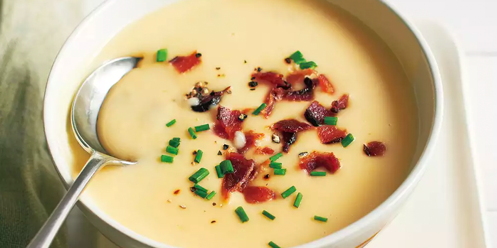
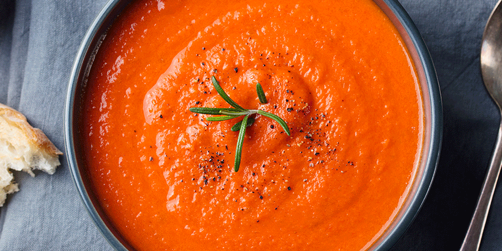

Soups
Potato Soup

Ingredients
- 3 tbsp butter
- 1 medium yellow onion, diced
- 5 large garlic cloves, minced
- 1/3 cup all-purpose flour
- 2 1/2 lbs yukon gold potatoes, roughly diced
- 4 cups low sodium chicken broth
- 2 cups heavy cream
- 1 1/2 tsp salt
- 1 tsp black pepper
- dried parsley, to taste
- Optional - chili flakes
- Optional - 6 strips of cooked bacon, diced
- Optional - shredded cheddar cheese
- Optional - chives, diced
Directions
- In a large pot over medium/high heat, add butter and diced onion.
Cook until onions are tender. Add garlic and sauté until fragrant.
- Sprinkle the flour over the ingredients in the pot and mix together.
- Immediately add diced potatoes, chicken broth, heavy cream and seasonings. Mix and
bring to a boil. Cook until potatoes are tender when piered with a fork.
- Reduce heat, and blend soup till your disered smoothness. (I would recommend using
an immersion blender.)
- Simmer a few more minutes, and then serve with any additional toppings. Enjoy!
Roasted Tomato Soup

Ingredients
- 3 lbs roma tomatoes, halved
- 8 cloves of garlic, peeled
- 2 yellow onions, thinly sliced
- 3 1/2 tbsp olive oil (divided)
- 1/2 cup packed fresh basil leaves
- 1/2 tsp dried oregano
- 1-2 cups vegetable broth, depending on desired thickness
- salt and pepper to taste
Directions
- Preheat the oven to 400o F. Line a
large baking sheet with parchment paper and place halved totatoes and
garlic cloves. Drizzle 3 tablespoons of olive oil over top and season
with salt and pepper. Roast in the oven for about 40-45 minutes
- In a large pot over medium heat, add 1/2 tablespoon olive oil and
the onion slices. Cook, sirring occasionally and add more oil if necessary.
Check the onions every 5-10 minutes until they are carmalized and turn off heat.
- Once tomatoes, garlic and onions are all done, add the roasted ingredients
to a large pot and blend them with an immersion blender until smooth. Add the
basil and blend again.
- Turn the heat to medium low and add broth and seasonings.
- Simmer until ready to serve, and enjoy!